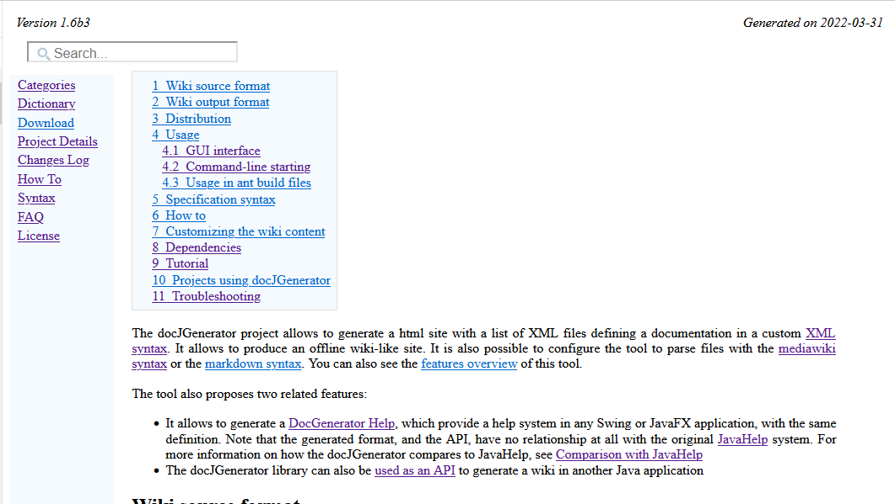
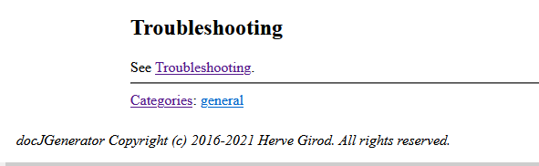

Home
Categories
Dictionary
Download
Project Details
Changes Log
What Links Here
How To
Syntax
FAQ
License
Wiki output overview
The default html output is a static web site. The web-site content is completely self-contained[1]
The wiki is accessible through an
Except if you make explicit references to external resources of course. It means that you can copy the files of the directory which contains the wiki everywhere you want, and it will still work
The wiki is accessible through an
index.html page which is directly in the output directory.
Structure of the articles content
The content of each article html file (including the index) has the following elements:
- The top of the page can present a left and right header
- A search box allows to search for a particular article, title, of text
- A left menu allows to navigate in the wiki[2]
Note that the user can redimension the width of this menu
- Optionally, A right menu can also be present

- The bottom of the article content present the list of categories which are associated with the current article
- The bottom of the page can present a bottom footer
Notes
See also
- Overview: This article presents an overview of the tool
- Output structure: This article presents the output structure of the wiki
×

Categories: General